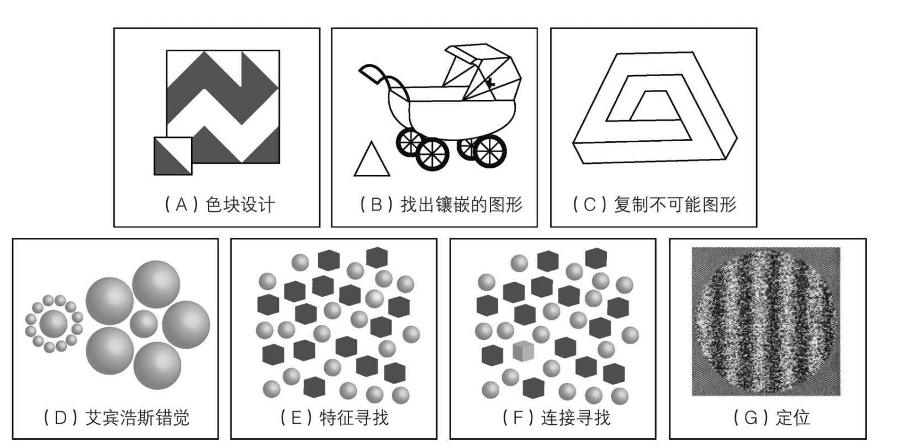

为什么会被称为弱中央统合呢？它指的是追寻意义的通常比较强烈的动力。如果是强中央统合，会有预设的偏好，想要观察到整体而不是部分。我们观察画作是把它当作一个物体而不是一丛杂乱的线条；我们听见的是句子而不是一堆杂乱的词语。
整体通常被称为格式塔（Gestalt），在德语中表示完全形态的意思。心理学家用它来解释，我们正常情况下为什么会倾向于观察到全局的整体而不是局部的部分。然而，只有在信息过量时才可能显示出这种偏好，而且你无法同时兼顾整体和部分。
情境是描述整体即格式塔及它与局部的关系的另一种方式。情境为局部赋予意义。在非常柔和的乐章中，某个单独音符可能听起来非常响亮。但同样的音符在吵闹的乐章中可能听起来很柔和。音高也同样如此。音高辨别力是指听出准确音高的能力，无论在什么样的情境中。令人称奇的是，大约30%的自闭症人士，即使未经专业音乐训练，也具有音高辨别力。
弱中央统合功能的意思是情境没有施加很多力量。在一个特定情境内部，一点一画都能看出本来的样子—完全一样—即使在另一种情境中它们看起来完全不同。在强中央统合当中，一个元素的意义会随情境而大幅改变，甚至有时会在另一种情境中完全认不出来是同一个元素。图17中所示的幻觉就是很好的例子。这里，中间的圆随着周围圆的情境而看起来或大或小。事实是它们的大小完全一样。如果你看它是大小一样，你就显示出弱中央统合。你不太容易被幻觉欺骗！显然，不被整体情境影响可能是大大的优点。有时，弱中央统合中的“弱”会被误解为“差”。其实大多数弱中央统合的测试都倾向于显示出好的或是优异的表现。
图17还展示出其他的视觉测试，自闭症人士在这些测试中表现良好。他们的共同点在于，他们青睐一种自动聚焦于细节的策略。这就是弗兰切斯卡·哈佩提及它的方式。关于这个观点，她已经做了非常多的理论和实验工作。例如，她表明，这种信息处理方式在相当数量的正常人群中也很典型，在自闭症孩子的大约一半的父亲和三分之一的母亲身上也是如此。
弗兰切斯卡·哈佩的实验室还设计了如下任务。把句子补充完整：你去打猎，带着一把刀和_______。
如果填“叉子”，你则是弱中央统合的例子，在这个例子中指跟局部元素有联系。因为刀和叉经常连在一起说。同时你还忽视了句子的整体意思。假如填的内容类似于“捉住一头熊”，你就表现出强中央统合。另一个测试例子是：“大海的味道是盐和______。”
你会不会填“胡椒”？这再次说明了弱中央统合的例子。如果填“鱼”之类的，你就把整个句子意思考虑在内，这是强中央统合的迹象。

图17 自闭症谱系障碍人士通常表现优异的任务
根据第四大理论弱中央统合，自闭症人士观察世界的方式与众不同。注重细节的处理方式不仅是指视觉，还适用于听觉和语言。其他感官呢—比如触觉？这里一个有趣的现象是，很多自闭症人士据说对触觉过分敏感。拥有超敏感的触觉也许类似于拥有辨别音高的能力。
弱中央统合能不能解释天才技能？某种程度上是的。这种类型的信息处理方式，主要表现就是能够逐字逐句记住材料，即使并不了解内容。很明显其他因素也会有影响—例如练习。反复练习，甚至沉迷其中，对一个兴趣爱好非常狭窄的人来说，可不是件琐碎无聊的事。自闭症的典型表现之一是避免新奇事物，这一点也很有利于他们的反复练习。当大卫开始对印刷物着迷时，他读了几百遍《戴帽子的猫》。他已经记住了整本书，但还是反复读书上的每一页。他的文字阅读能力远远超越他的理解能力。
弱中央统合理论做了些很大胆的尝试，试图在自闭症智力的一些毫不相干的方面建立联系。它试图同时既能解释某些特殊天赋，也能解释某些认知缺陷。可能是因为试图用一种理论解释所有现象，它也就没有我们看过的前三大理论那么成功，而前三种理论只考察了缺陷。
对注意力的系统研究也许会澄清弱中央统合思想考察的现象。对细节和对整体的关注也许在本质上非常不同。当注意力从注重细小元素切换到注重大整体时，它发生了什么？反过来呢？研究表明，自闭症人士总体说来更倾向于近距离放大那些小元素，但不太能够缩小、拉远以注意到整体。
该理论的问题
研究者们已经尝试了很多任务，这些任务清楚表明自闭症人士察觉到格式塔并无困难。相反，他们有个强化的处理细节的机制。与弱中央统合相对应，这种理论叫作知觉促进增强理论。它提出，有一个独立的细节处理的优先级，而并非简单的格式塔处理的次等级的结果。系统化是另一种思想，它强调自闭症人士不只是看见微小的细节，而且热爱系统。正是这种对系统的热爱有可能解释一些天才技能，比如日历推算。
另一种批评认为，聚焦于细节的处理方式看起来只能适用于自闭症障碍的部分人而非所有人。如同我们从其他几大理论看到的一样，这个批评并不一定是致命的：没有哪个理论可能适用于自闭症谱系障碍的所有病例。必然有一些亚群体。